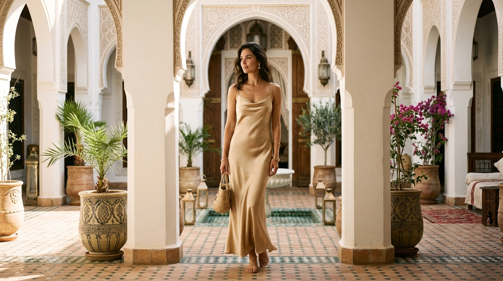
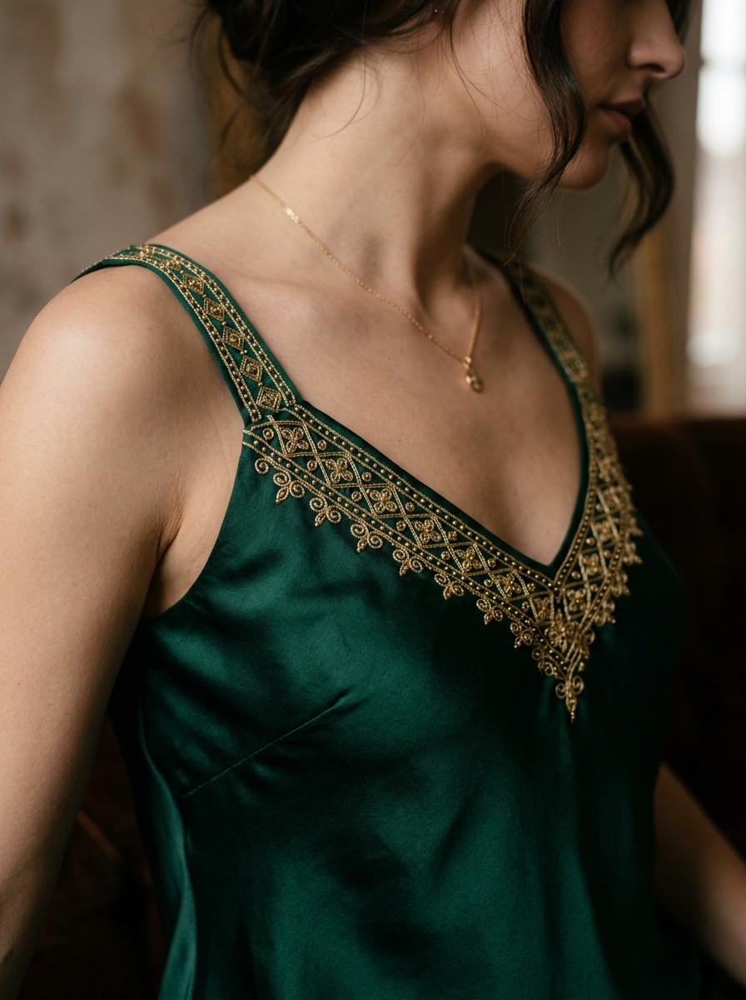
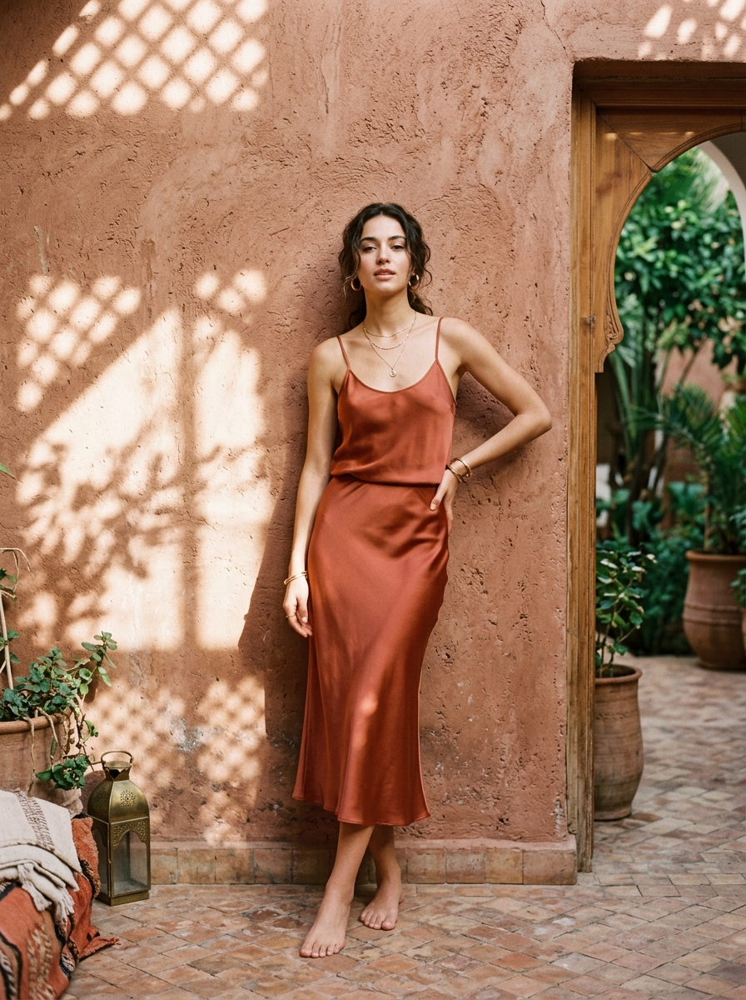

Fusing the ancient artistry of Moroccan gold-thread embroidery with modern, fluid silk slips. Crafted sustainably for the contemporary nomad.

Slips Morocco was born out of a desire to preserve the rich textile legacy of our ancestors while redefining everyday luxury. Each slip dress is a conversation between traditional Moroccan artisans and minimalist modern tailoring.
We work directly with a women's cooperative in Rabat and master embroiderers (Maâlems) in Marrakech. Using time-honored techniques, they hand-apply delicate silk cord (Sfifa) and gold embroidery, transforming fluid loungewear into wearable works of art.
Naturally sourced silk and cruelty-free processes protect both the planet and local livelihoods.
We pay fair, living wages to preserve local master craftsmanship for generations to come.
A curated selection of styles designed to drape effortlessly, capturing the warm tones and textures of the Moroccan landscape.

Limited EditionDeep green mulberry silk matching the high-altitude forests of the Atlas Mountains, embellished with delicate Maâlem gold-thread neck lining.
Request Fitting
SignatureTwo-piece camisole and bias-cut slip skirt set dyed naturally using madder root and pomegranate rinds to mimic Marrakech’s sun-drenched walls.
Request FittingWe color our silks using hand-harvested Moroccan plants and minerals. Choose a hue to reveal its natural origins, dye process, and matching garment feel.
Yielding deep earthy tones that capture the warm terracotta brickwork of ancient Marrakech Medina. It evokes warmth, stability, and connection to the Moroccan earth.
Our production rejects machine-made perfection in favor of soul-infused irregularities that make every slip dress unique.
The necklines of our dresses are bordered with hand-woven silk ribbons (Sfifa) braided by our cooperative artisans using traditional wooden bobbins.
Double-sided borders are structured with fine silk cords (Kitane) applied with high precision, which gives the silk fabric its beautiful structure and heavy drop.
Small, spherical buttons made of woven gold or silk thread are individually hand-tied and applied as decorative fasteners, reflecting historic caftan closures.
Because our pieces are handcrafted in highly limited batches, we manage acquisitions through private consultations. Contact us to request a custom fitting, color match, or to view our current ready-to-wear pieces in Marrakech.
Riad Zitoune Jdid, Medina, Marrakech
atelier@slipsmorocco.com
Our atelier team in Marrakech will contact you within 24 hours to schedule your private fitting or consultation.